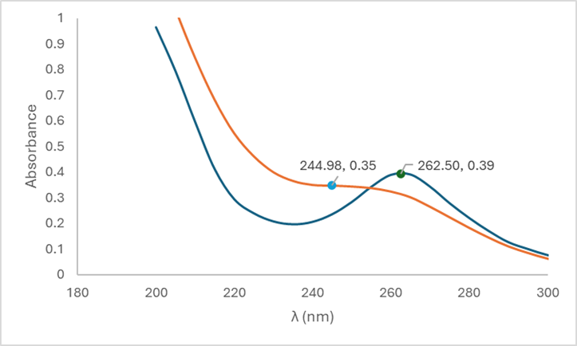
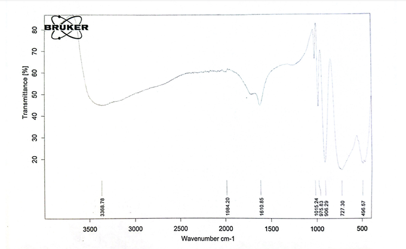
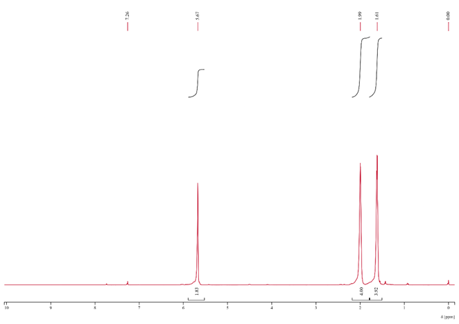
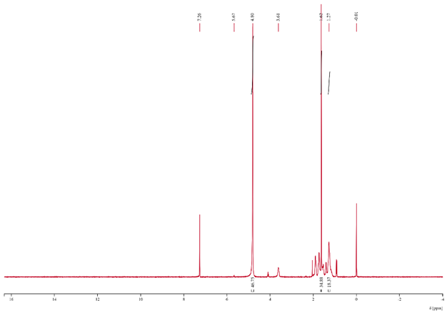

Testing & Materials
12-Tungstosilicic Acid Synthesis

Project overview
Synthesizing a solid acid catalyst and testing whether it works.
In a team of three, I synthesized the polyoxometalate 12-tungstosilicic acid and tested it as a catalyst for turning cyclohexanol into cyclohexene.
12-tungstosilicic acid is a Keggin-type solid acid with strong Brønsted acidity, which makes it a promising reusable catalyst for dehydrating alcohols into alkenes. We made the acid, confirmed its identity against the literature, and then ran the catalytic reaction to see whether it delivered.
Key work & outcomes
- Confirmed the synthesis: UV-Vis λmax of 245–265 nm, within the expected 200–260 nm band.
- Matched the literature IR peaks: a broad band near 3369 cm−1, 1611 cm−1, and sharp peaks from 727–1015 cm−1.
- Used 1H NMR to show the catalytic run produced mostly side products rather than cyclohexene.
- Proposed purification and reaction-condition fixes for future catalytic testing.
Synthesis
Making 12-tungstosilicic acid
From sodium tungstate and sodium silicate to white crystals.
We dissolved sodium tungstate dihydrate in hot water, added sodium silicate, and added concentrated HCl dropwise near boiling. After filtering, we extracted the acid with diethyl ether in a separatory funnel, evaporated the ether, and crystallized the product on a water bath.

Characterization
Reading the spectra
The acid matched the literature; the cyclohexene did not.
UV-Vis (Cary 60) and IR spectra of our acid lined up with published spectra. We then heated cyclohexanol with the acid, distilled off the cyclohexene–water azeotrope, and ran 1H NMR in CDCl3. Compared with lab-grade cyclohexene, our product showed only a weak 5.67 ppm alkene peak and strong side-product peaks, which we traced to a contaminated flask. We proposed a high-boiling chaser solvent such as toluene and salting out bulk water with sodium chloride.




Continue exploring